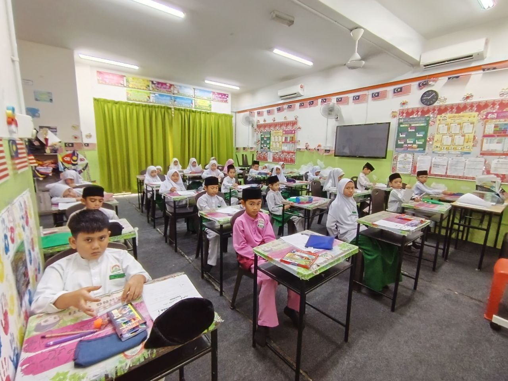

Bandar Puncak Alam
No. 41-1 Jln Dataran Suria 15/8/3,Suria Square,
42300 Bandar Puncak Alam, Selangor
Sekolah Rendah Islam Wardatul Imtiyaaz di Bandar Puncak Alam dan Bandar Seri Coalfields. Kurikulum sekolah rendah dan pendidikan Islam, diajar bersama dari Darjah 1 hingga 6.
Tentang SRIWI
Subjek teras sekolah rendah diajar bersama Pendidikan Islam, Bahasa Arab dan Jawi.
Bacaan, tajwid dan hafazan surah pilihan mengikut tahap murid.
Solat berjemaah, doa harian dan amalan adab dibimbing sejak awal.
Guru dapat memberi perhatian dan memantau perkembangan setiap anak.

Pendaftaran 2027
Hari pendaftaran rasmi pada 15 Oktober. Ibu bapa boleh mendaftar secara dalam talian melalui borang pendaftaran.
Lengkapkan borang pendaftaran dalam talian dengan maklumat murid dan ibu bapa.
Staf SRIWI akan menghubungi anda untuk mengesahkan tempat dan memberi maklumat lanjut.
Bayar secara dalam talian (perbankan internet atau QR) dan hantar bukti bayaran.
Pihak sekolah akan menghantar resit rasmi sebagai pengesahan pendaftaran.
Yuran
Amaun dalam Ringgit Malaysia (RM) mengikut darjah. Pilih jenis bayaran.
Lihat dokumen pendaftaran sesi 2027Poster rasmi, tekan untuk besarkan
Harga tertakluk kepada perubahan dari semasa ke semasa. Sila rujuk pihak sekolah bagi sebarang pertanyaan.
Galeri
Majlis, kelas dan program murid sepanjang tahun. Tekan gambar untuk melihat dalam saiz penuh.
Perkhidmatan
Sokongan selepas waktu sekolah untuk murid dan keluarga.
Penjagaan murid selepas waktu sekolah dan perkhidmatan pengangkutan untuk murid.
Tanya melalui WhatsAppBimbingan membaca Al-Quran seorang guru dengan seorang murid, mengikut tahap dan kelajuan anak.
Tanya melalui WhatsAppKelas asas membaca dan mengeja Jawi untuk murid sekolah rendah.
Tanya melalui WhatsAppIkuti pembelajaran KAFA secara dalam talian dari rumah.
Tanya melalui WhatsAppCawangan
Dua cawangan di Selangor. Hubungi cawangan dahulu untuk temujanji lawatan.
Tempat adalah terhad. Isi borang pendaftaran, atau hubungi kami untuk bertanya dan datang melawat sekolah.